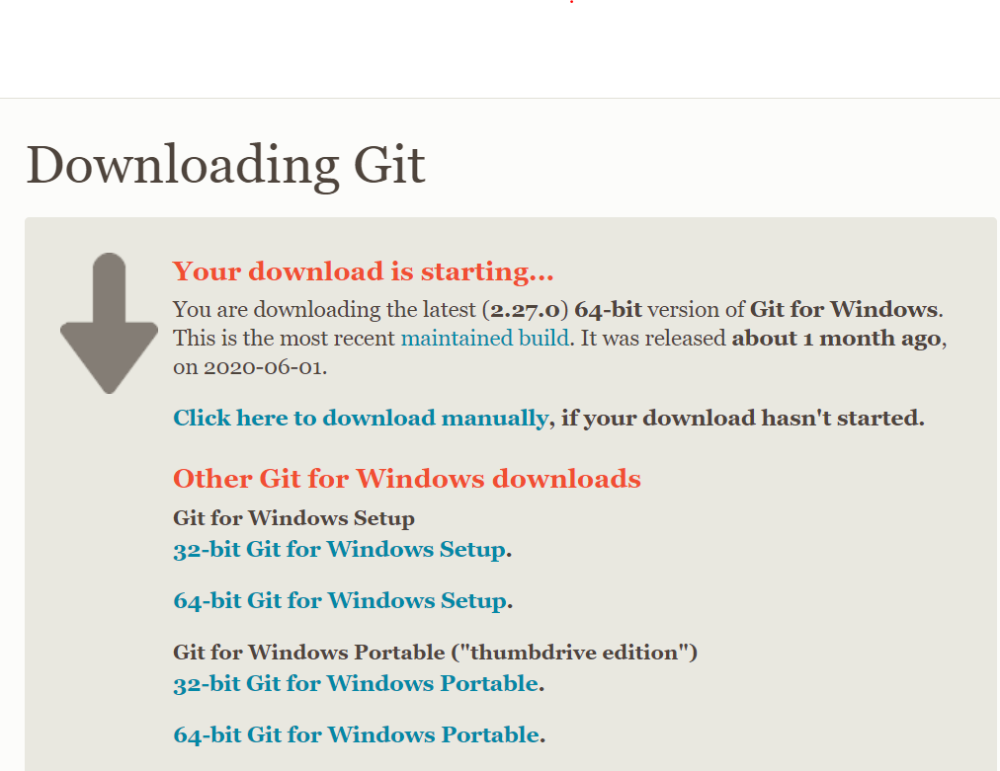
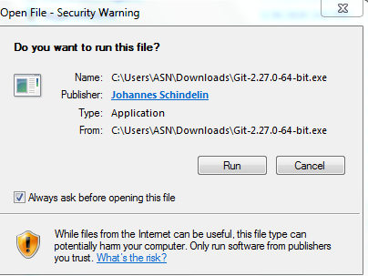
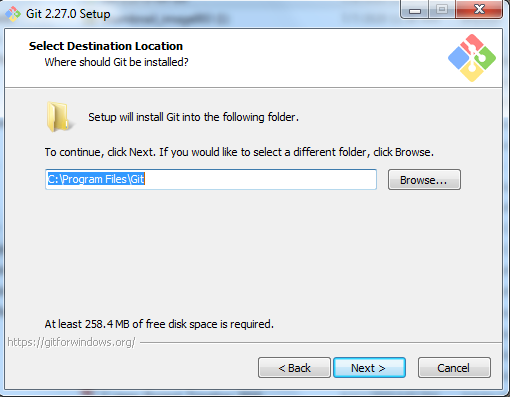
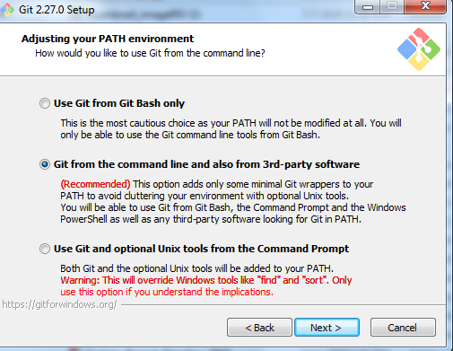
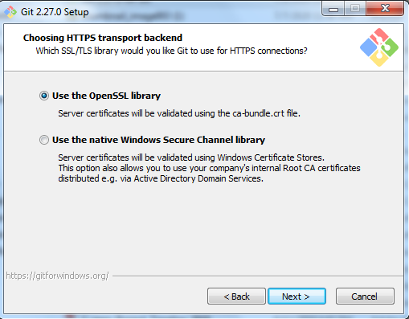
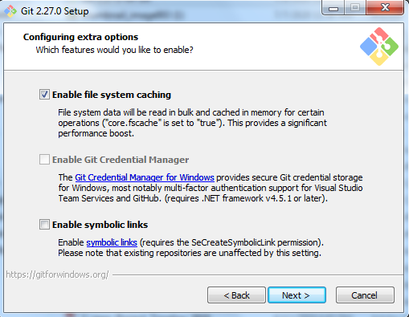
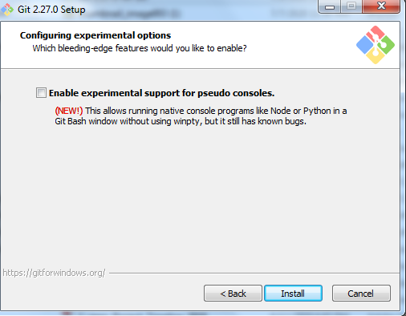
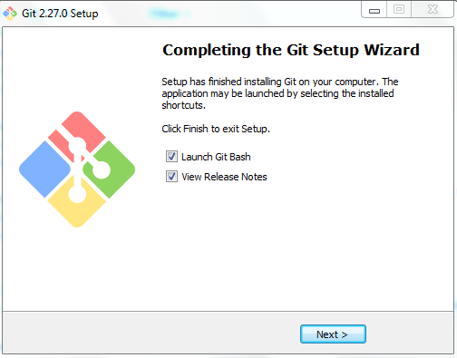

Go to the Git download page. Click Download [version number] for Windows, as shown in the following image:

You will be redirected to a new page and the download will start.

Note: If the download doesn't start, click Click here to download manually.
Go to the folder where you saved the file and double-click to open it.

Click Run to begin the installation.

Select the location where you want to install Git Bash. Note: It's recommended that you simply install to the default location. Click Next.

Choose the components you want to install, or simply leave the default options selected. Click Next.

You can change the name of the start menu folder or simply leave the default name as is. Click Next.

Select the default editor for Git to use. Click Next.

Choose how you want to use Git from the command line. Click Next.

Select Use the OpenSSL library. Click Next.

Configure your line ending conversions for Windows by selecting the default option, Checkout Windows-style, commit Unix-style line endings. Click Next.

Configure your terminal emulator to use with Git Bash by selecting the default option, Use MinTTY(the default terminal of MSYS2). Click Next.

Configure the default behavior for a git pull by selecting Default (fast-forward or merge). Click Next.

Select any additional options you want to install. (The default option is sufficient to use Git Bash successfully.) Click Next.

You can enable experimental options if you choose to. By enabling these options, you will be able to try newer features that are still being developed. However, you do not have to select any experimental options to use Git Bash. Click Install to complete the installation with the options you have chosen. The installation runs and when complete, a Completing the Git Setup Wizard window opens.

Leave the checkboxes selected and click Next.
